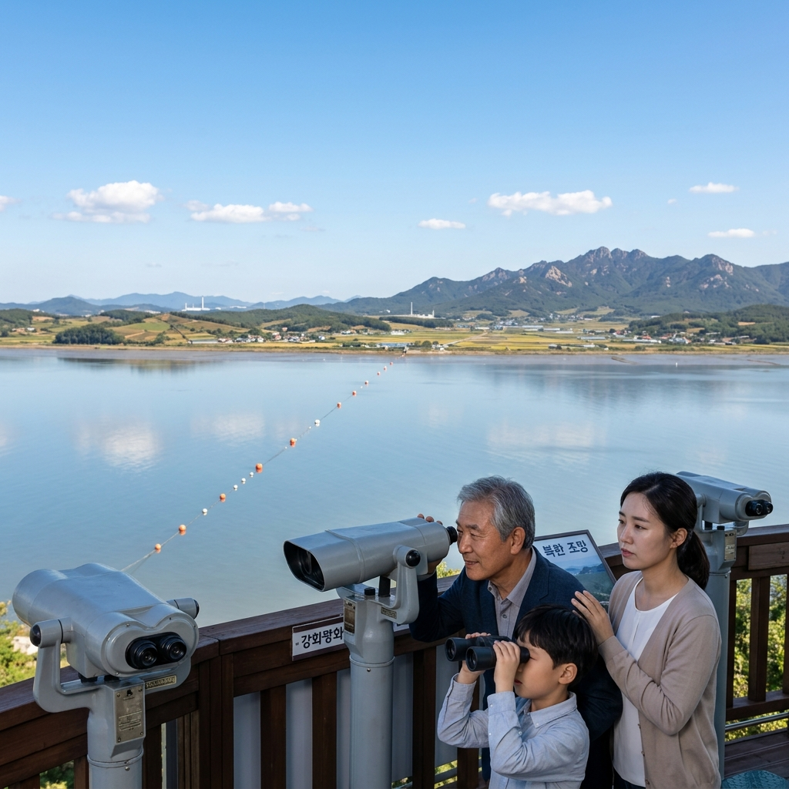
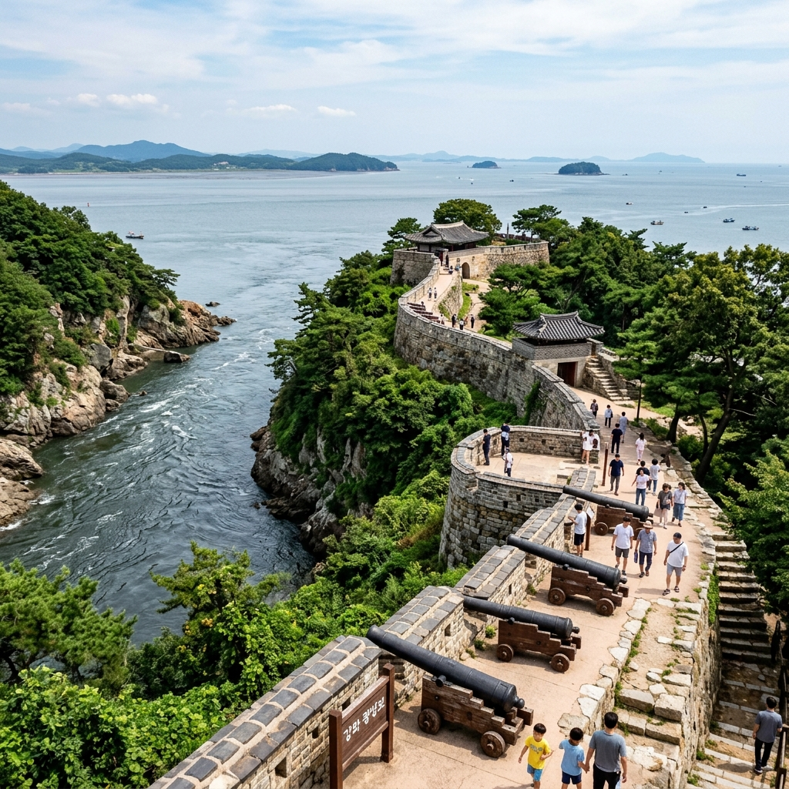
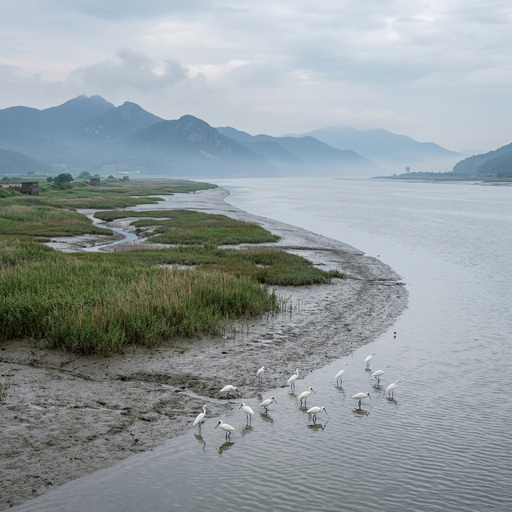

맑은 날 망원경 없이도 맨눈으로 북한 마을의 지붕, 논밭, 송전탑이 뚜렷하게 보입니다. 전망대에 비치된 고배율 망원경을 이용하면 더욱 선명하게 관찰할 수 있습니다.
6월 풍경: 모내기가 끝난 연초록 논이 연백평야 전체에 펼쳐집니다. 분단이 아니었다면 그저 아름다운 농촌 풍경이었을 것이라는 생각에 마음이 복잡해집니다.
가을 풍경: 황금빛 벼가 익어가는 10월 초중순이 조망 인기 시기입니다. 북한 들판이 황금색으로 물드는 모습은 이 전망대의 명장면 중 하나입니다.
겨울 풍경: 설경 속 북한 산하가 고요하게 펼쳐지며, 두루미·재두루미 등 희귀 철새들이 한강 하구에 도래하여 자연 관찰의 즐거움이 더해집니다.
| 구분 | 내용 |
|---|---|
| 입장료 | 성인 2,500원 / 청소년 1,700원 / 어린이 1,000원 |
| 운영 시간 | 09:00~18:00 (하절기) / 09:00~17:00 (동절기), 월 휴관 |
| 위치 | 인천 강화군 양사면 철산리 산168 |
| 북한까지 거리 | 약 2.3km (한강 하구 너머) |

1층 안보 전시관: 남북 군사력 비교 자료, 분단 역사 연표, 한강 하구 지역 군사 현황 지도 등이 전시되어 있습니다. 특히 강화도 일대의 6·25전쟁 전투 기록이 상세히 다루어집니다.
2층 전망 공간: 유리창 너머 북한 방향의 파노라마 전망과 함께 고배율 망원경이 설치되어 있습니다. 유리 내부에서 촬영하면 반사 때문에 사진 품질이 낮아지므로 3층 야외 테라스를 이용하는 것이 좋습니다.
3층 야외 테라스: 가장 탁 트인 전망을 즐길 수 있는 공간입니다. 날씨 좋은 날에는 이곳에서 맨눈으로도 북한 마을이 보입니다. 사진 촬영 최적 공간이기도 합니다.
평화전망대를 기점으로 강화도 북단 해안선을 따라 조성된 강화 평화길은 총 20km 길이입니다. 섹션별로 나눠 걸을 수 있으며, 평화전망대에서 초지진까지 약 10km 구간(3~4시간)이 핵심 코스입니다.
한강 하구의 갈대밭, 철새 도래지, 군사 경계선과 맞닿은 철조망 해안이 교차하며 펼쳐집니다. 저어새, 흰꼬리수리 등 희귀 조류의 서식지로도 유명하여 탐조 애호가들에게도 큰 인기입니다.
강화도는 한반도 역사의 축소판입니다. 평화전망대를 기점으로 하루 안에 수천 년의 역사를 거슬러 올라가는 코스를 짤 수 있습니다.
강화 역사 1일 코스: ① 평화전망대(안보·현대) → ② 강화 역사박물관(고려 천도 역사) → ③ 광성보(신미양요 격전지) → ④ 갑곶 돈대(병인양요 현장) → ⑤ 강화읍 시장 젓갈·밴댕이 식사 → ⑥ 전등사(고구려 창건 고찰) 또는 마니산 참성단(단군 관련 유적)
이 하나의 코스 안에 선사시대 → 고려 → 조선 외세 저항 → 현대 분단까지 한국 역사 전체가 담깁니다. 강화도가 단순한 섬 관광지를 넘어 '한반도 역사의 압축판'이라 불리는 이유입니다.

인간의 접근이 제한된 군사 구역이 역설적으로 자연 생태계의 보호구역이 되었습니다. 강화 평화전망대 주변 한강 하구 갯벌은 저어새, 두루미, 흰꼬리수리 등 세계적 희귀종의 서식지로 국제 탐조 커뮤니티에도 잘 알려진 명소입니다.
가을~초봄 이동 시기에는 수백 마리의 두루미 떼가 갯벌에서 먹이 활동을 하는 장관을 볼 수 있습니다. 안보 관광과 생태 관광을 동시에 즐길 수 있는 공간이라는 점이 강화 평화전망대를 타 전망대와 차별화하는 핵심 요소입니다.
밴댕이 회: 5~6월 제철 밴댕이 회와 회무침은 강화 외포리 일대 횟집의 명물입니다. 한강과 서해의 영향을 동시에 받는 강화 밴댕이는 고소한 맛이 독특합니다.
강화 젓갈: 새우젓, 어리굴젓, 황석어젓 등 강화 젓갈은 전국 최고 수준으로 인정받습니다. 강화읍 풍물시장에서 시식 후 구매가 가능합니다.
강화순무 김치: 왕실 진상품으로 올라갈 만큼 풍미가 뛰어난 강화 특산 순무로 담근 김치는 이곳에서만 맛볼 수 있는 특별한 미각 경험을 선사합니다.
자가용: 김포 48번 국도 → 강화대교 통과 → 강화읍 → 북단 방향. 내비게이션에 '강화 평화전망대'를 입력하면 됩니다. 서울 강서구 기준 1시간 10~30분 소요. 전망대 전용 무료 주차장 이용 가능.
대중교통: 신촌 방면에서 강화행 직행버스 이용 후 강화터미널 하차. 이후 택시로 평화전망대까지 15~20분, 약 1만 5천 원 내외입니다. 버스 편이 제한적이므로 귀환 시각을 미리 확인하세요.
| 전망대 | 위치 | 특징 |
|---|---|---|
| 강화 평화전망대 | 인천 강화군 | 역사+생태 복합, 서울 1시간 거리 |
| 오두산 통일전망대 | 경기 파주 | 임진각 인근, 접근 가장 용이 |
| 도라산 전망대 | 경기 파주 | DMZ 내, 개성공단 조망 |
